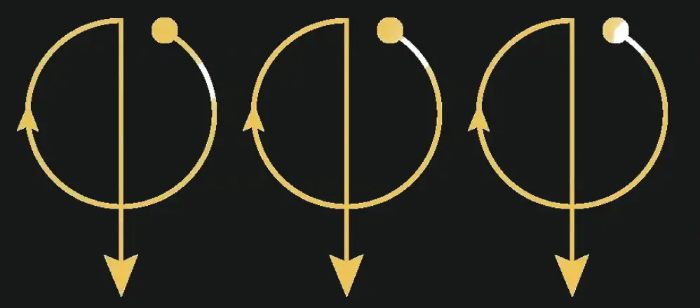
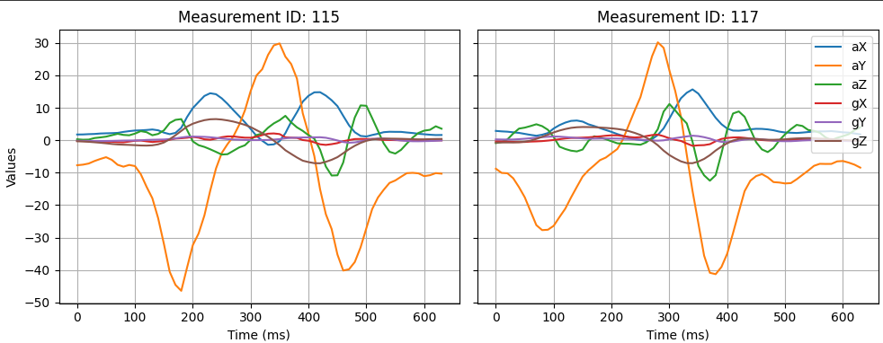
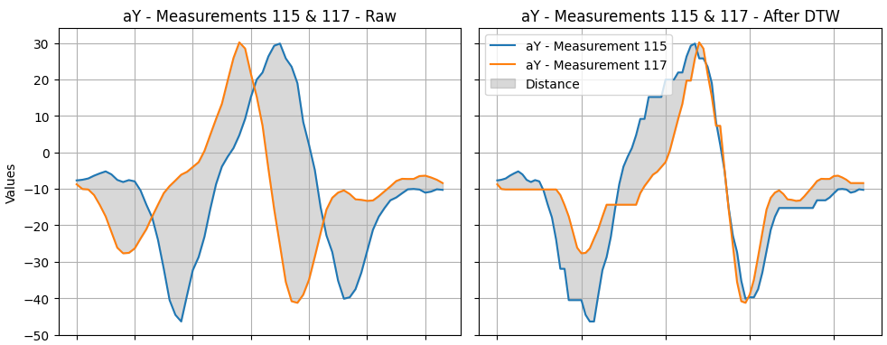

This blog post is part of a series of posts on my attempt to build an electronic magic wand. Click here to view all the posts.
After the colossal failure of my idea to calculate the wand position by integrating acceleration (check out the previous post for details), I realized I was being stupid! My original plan was:
- Get accelerations from the IMU
- Double integrate the accelerations (after subtracting gravity) over time to trace the 3D position of the wand tip over time
- Match the pattern formed by the wand tip movements against some stored patterns for various spells
This is stupid! Step 2 does more harm than good. Sure, the transformation from accelerations to a position trace is an intuitive next step with potential visual appeal. But it adds no meaningful information to the data. Worse, it increases noise in the data. The inexact (ie, very noisy) estimate of gravity, when subtracted from the acceleration vector, pollutes every measurement.
Instead, we can jump directly from Step 1 to Step 3. We can store the raw acceleration values for various spells as reference data, and then try to match it against the accelerations measured from the performed spell.
Time Warping
To compare two different wand movements, a good starting point is calculating the Euclidean distance between the samples of the raw acceleration values. This is like taking the time-varying waveform of the acceleration of one movement and subtracting it from the other. The closer the result is to 0, the better the match. The main problem with this method is the varying speed of the wand: the movements may not necessarily be of the same duration, so the waveforms will not line up.
There is naturally some variation in the duration it takes to perform the wand movement for a spell. For me, it can vary between 0.5s to 1.2s for the same spell. The solution to this part is easy: we can “stretch” or “compress” the time axis of the waveform by interpolating the sampled readings. However, this does not solve the problem entirely.
Consider these 3 Alohomora wand movements. Image 3 is just a slower version of image 2, which can be matched by compressing the time period of image 3. However, images 1 and 2 are slightly different.

In the first image, the wand traces the circular part relatively quickly as compared to the second image. But both the wand movements take the same amount of time. This difference cannot be compensated by stretching or compressing the time period. But we still need to be able to determine that both the wand movements are for the same spell! For example, here are the readings of two wand movements for the same spell in the data that I collected:

Both the measurements have 64 samples each, sampled at 100Hz, so we don’t need to stretch or compress any of them. However, the movements don’t line up together. Measurement 115 has a peak of aY at around 350ms, but measurement 117 has a trough of aY around the same time. A simple Euclidean distance would show a huge difference between the two!
Fortunately, there’s an algorithm to solve exactly this problem: Dynamic Time Warping. It effectively distorts the time axis. Instead of stretching/compressing the whole axis, some parts of it are stretched and some are compressed. The following image shows how the aY values of measurements 115 and 117 are compared, first using the raw Euclidean distance, and then using FastDTW (FastDTW is an approximate DTW algorithm that runs in O(N) time instead of O(N^2) of the standard DTW).

The distance between the two measurements is reduced by more than 50% when using DTW.
Next Steps
A fun fact about DTW: It’s used for speech recognition. This means that I can use the same algorithm to map incantations to spells when I put a microphone in my wand!
But before I can dream of that, I need to implement the DTW algorithm. I couldn’t find any existing DTW libraries for ESP8266, so I’d have to implement it from scratch. There are many flavours and optimizations for DTW for different use cases. For my wand, I need:
- Perfect matching: I never want a movement to match the wrong spell.
- Low memory consumption: Since I need it to run on the wand microcontroller, which only has a few hundred KBs of RAM.
- Fast matching: I don’t want to perform a spell and then wait 5 seconds for it to take effect.
So, I need to get back to doing a thorough literature review to find out about all the possible optimizations and whether they help me. Tot ziens!